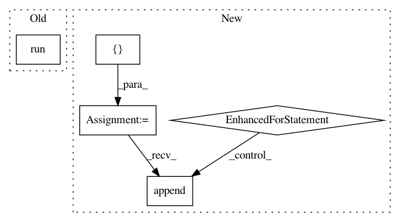

59d84cd18324aa86373091c8a0c262e6536d32fe,src/detection/tensor/detector.py,Detector,detect,#Detector#,29
Before Change
with tf.Session(graph=imported_graph) as sess:
with tf.device("/gpu:0"):
softmax_tensor = sess.graph.get_tensor_by_name("final_result:0")
predictions = sess.run(softmax_tensor, {"DecodeJpeg:0": image_array})
predictions = np.squeeze(predictions)
answer = {}
for node_id in range(len(predictions)):
answer[self.labels[node_id]] = predictions[node_id]
After Change
threads = [pool.apply_async(self.operation,
args=(sess, softmax_tensor, np_images[image_number], image_number,)) for
image_number in range(len(np_images))]
answers = []
for thread in threads:
prediction, image_number = thread.get()
prediction = np.squeeze(prediction)
answer = {"image_number": image_number}
for node_id in range(len(prediction)):
answer[self.labels[node_id]] = prediction[node_id]
answers.append(answer)
return answers
@staticmethod
def _pil_to_np(image):
In pattern: SUPERPATTERN
Frequency: 3
Non-data size: 5
Instances
Project Name: geometalab/OSMDeepOD
Commit Name: 59d84cd18324aa86373091c8a0c262e6536d32fe
Time: 2016-08-12
Author: samuel.kurath@gmail.com
File Name: src/detection/tensor/detector.py
Class Name: Detector
Method Name: detect
Project Name: THUNLP-MT/THUMT
Commit Name: 410992318552115d2e3de84844bf523012e3e98e
Time: 2019-11-26
Author: cg847519328@163.com
File Name: thumt/utils/hooks.py
Class Name:
Method Name: _evaluate
Project Name: tyarkoni/pliers
Commit Name: 0580cec5ee73ef558a7bed89977e550b34b31428
Time: 2017-11-02
Author: delavega@utexas.edu
File Name: pliers/updater.py
Class Name:
Method Name: check_updates